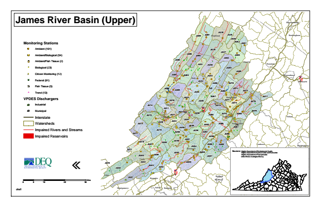

James River Basin (Upper)
Monitoring Stations
Ambient (101)
Ambient/Biological (54)
Ambient/Fish Tissue (2)
#* Biological (23)
kj Citizen Monitoring (12)
XW Federal (91)
Fish Tissue (5)
^ Trend (13)
VPDES Dischargers
A@ Industrial
A@ Municipal
Interstate
Watersheds
Impaired Rivers and Streams
Impaired Reservoirs
«
0 5
10 20 30 Sources: Virginia Department of Environmental Quality
Virginia Department of Conservation and Recreation Virginia Department of Transportation United States Geological Survey
draft
Miles
Harrisonburg
JU28 JU01
JU29
Waynesboro
JU13
JU48
Bedford
JU25
JU12
JU17
JU16
JU04
Highland Rockingham
JU26
JU62
JU61
JU27 JU05
JU02
JU63
JU06
JU31
JU30
JU64
Augusta
Staunton
JU65
JU69
JU07
JU03
JU33 Bath
JU32
JU66
JU70
Albemarle § ̈¦ 64
JU08
JU09
JU34
JU68
JU72
JU73
JU23
JU67
Rockbridge
JU77
JU10
JU35
JU71
JU78
JU14
Alleghany JU11
§ ̈¦ 64
JU75
JU79
JU15
JU21
JU36
JU38
JU85
JU19
JU50
JU59
JU18
JU49
JU47
JU54
JU58
Buckingham
JU45
JU46
JU57
JU42
JU44
JU52
JU41
Bedford
Appomattox
Campbell JU74
JU60
§ ̈¦ 81
JU24
JU80
JU82
JU51
JU76
JU43
JU84
Lexington
JU53
JU55
Nelson
Craig
Covington
JU20
JU22
JU37
JU39
JU83
Buena Vista
JU40
JU81
JU86
JU56
Amherst
Botetourt
Lynchburg Giles
Roanoke
Montgomery Salem
Roanoke